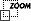
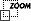

| 3 of 10 |

Alfred Stieglitz was always interested in photography as an art form. He was also interested in the technical boundaries of photography. This picture is one of his early experiments in stopping motion, in this case the motion of a horse-drawn carriage and the wind-whipped snow. Stieglitz stood for three hours in a driving blizzard to get this picture, waiting for something picturesque to come moving through the storm.
The snow was a critical aspect, for this picture was also a Stieglitz experiment in atmosphere. Rather than use a special soft-focus lens (called a “Lens of Atmosphere” in advertisements), Stieglitz wanted to take straight, hand-held “detective camera” photos of real, observed moments. He needed naturally-occuring atmosphere to create a mood, as in a painting, situating his pictures squarely in the realm of the art world. Weather provided the atmosphere, the fuzzy, soft-focus effects that could double as brushstrokes. Weather could be means to his artistic ends and Stieglitz would turn to it again and again.
| 3 of 10 |